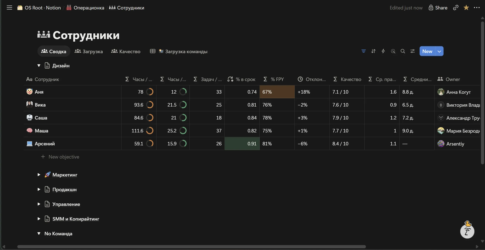

Система Notion
[описание, текст позже]
01 / Дашборды
Задачи, часы и правки вместо переписки.

02 / Операционная база
Демо-пример: одна цель от сигнала до нормы. Каждый шаг — своя база Notion, связи между ними живые. Названия заменены номерами: показана механика, а не содержание.

03 / Контент-план
[текст позже]
![[контент-план, подпись позже]](../../assets/shot-content.webp)
04 / База материалов
Норма работы, база идей и разборы съёмки.


05 / Частые запросы креативного директора и руководителя контента
[текст позже]